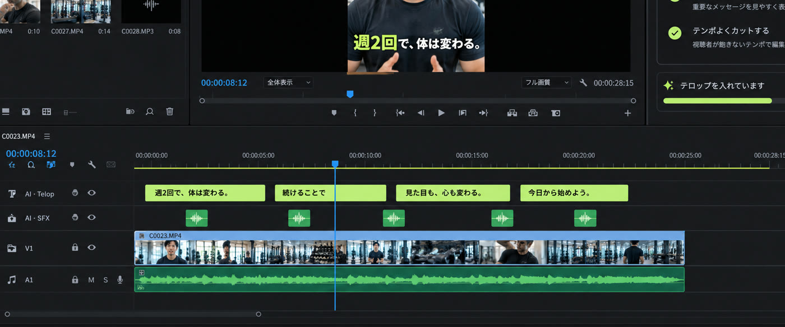
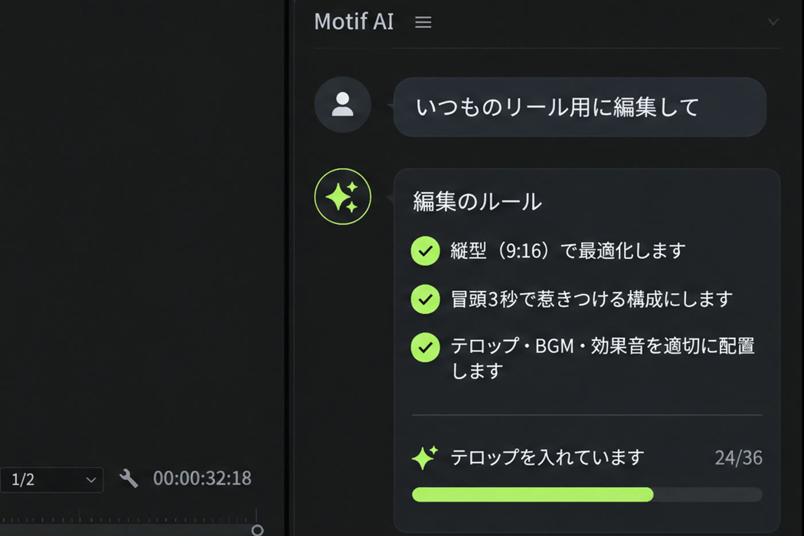
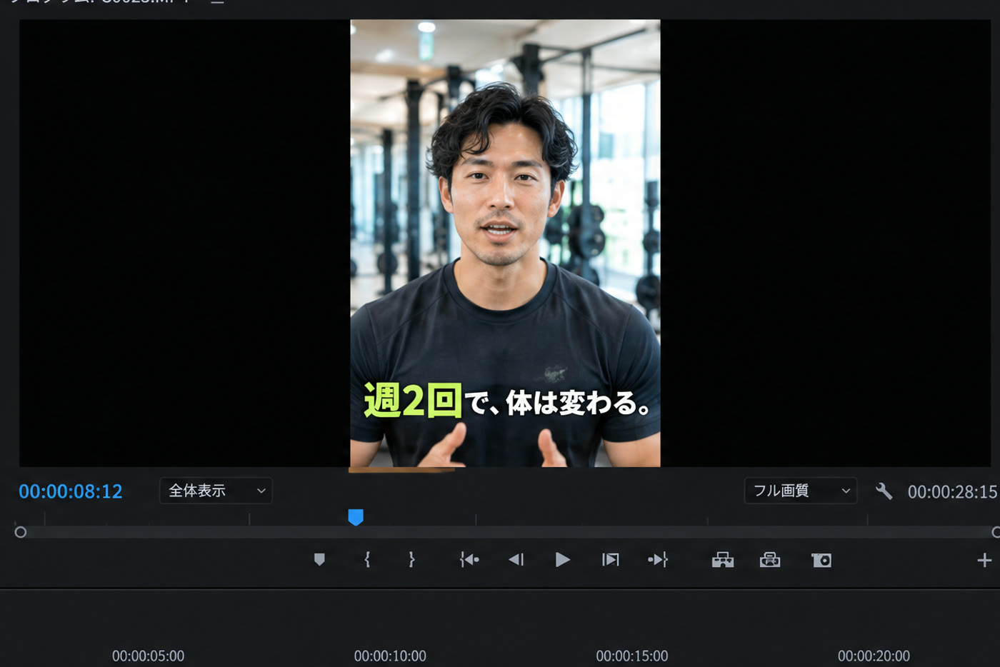

一本つくる。いつものを、覚える。
次の素材に、同じ手つきで
完成した動画を眺めて“それっぽく”真似るのではなく、あなたが Premiere で組み立てた構成そのものを読み取ります。テロップの型、カットの間、SE と静止画の置き方、色まで。

Premiere で、一本編集する
プロジェクトから、テロップの書式と配置、カットの間、SE と静止画の使い方、カラーグレードを読み取ります。

提案は読める。承認は、あなた
読み取った構成は「ルール」として提案されます。承認したものだけが記憶に残り、却下したものは二度と提案されません。

フォルダを指す。あとは質問に答えるだけ
Claude Desktop で素材のフォルダを指定。承認済みのルールで編集し、判断が分かれる箇所だけ聞いてきます。
指示は Claude から。
結果は、Premiere に
一本のリールを構成する、
六つの工程
現在のベータ版は、話者一人の縦型ショート（リール・Shorts・TikTok）に最適化しています。
テロップ
01文字起こしをもとに、あなたの書式・位置・行分割・強調で配置。Essential Graphics として置かれるので、文言もタイミングも手で直せます。
カット提案
02文字起こしと間から、切る候補を提案。採用する境界は、話者が画面に収まり、目線がカメラにあるかまで確認してから決めます。
静止画・SE・音楽
ライブラリの素材を、いつもの位置とタイミングで配置。音量は前回の値に合わせ、話し声と重なる SE は避けます。
カラーグレード
04一度つくった LUT と Lumetri の設定をテンプレートとして持ち運び、新しいシーケンスにそのまま適用します。
修正から学ぶ
05あなたが手で直した箇所を検出し、次回のルールとして提案。承認するまで、何も変わりません。
クライアント別メモリー
06アカウントやクライアントごとに独立したスタイルプロファイル。A の手つきが B に混ざることはありません。
書き出しは、しません。
編集できる状態で、返します
生成されるのはすべて Premiere のネイティブなクリップ・グラフィック・エフェクト。手で直せて、Undo できて、いつもの書き出しへ。
自分の商品を、自分の動画で売る人へ
動画は目的ではなく手段。一定の品質で、数を出し続けたい。そういう使い方のためにつくっています。

オーナー・事業主
週に数本の縦動画で、自分のサービスを届けている。編集は必要だけれど、編集が仕事ではない。一度決めた“うちの動画の型”を、毎回同じ手つきで。

SNS 運用会社・チーム
複数のアカウントを、一定の品質で量産する。一つのアカウントで固めた編集を、別のアカウントの素材にも。クライアントごとにメモリーは分かれます。
ベータ版プラン
- Premiere Pro パネルと Claude Desktop コネクタ（Mac 1 台・1 名）
- ベータ期間中に追加される機能の更新
- メールでのサポート
- いつでも解約。初回契約は 7 日以内なら全額返金
お支払いはクレジットカード（Stripe）。料金の詳細
| 別途必要 | Adobe Premiere Pro（26.3.2 以降）／ Claude のプラン（Anthropic・Max 推奨）／ macOS |
|---|---|
| 含まれないもの | Adobe と Anthropic の利用料。Motif AI は生成 AI の利用枠を販売しません |
| 請求 | ご契約日に初回分、以後は毎月同日に自動で |
| 解約 | メールでご連絡ください。次回以降の請求は止まり、支払い済みの期間はご利用いただけます |
よくある質問
どんな動画に向いていますか？
話者一人の縦型ショート（Instagram リール、YouTube Shorts、TikTok）で、テロップが主役の編集に最適化しています。横型や多人数の対談、ドキュメンタリー的な編集は、現時点では想定していません。
自分の編集スタイルは、どうやって覚えるのですか？
完成した Premiere プロジェクトから、テロップの書式・配置・行分割、カットの間、SE と静止画の使い方、カラーグレードを読み取り、「ルール」として提案します。あなたが承認したルールだけが記憶に残ります。
他人の動画（MP4）を眺めて“それっぽく”学習する機能はありません。覚えるのは、あなた自身が組み立てた編集だけです。
生成された結果は、自分で編集できますか？
はい。テロップは Essential Graphics、カットはクリップの分割と削除、SE はオーディオクリップ、色は Lumetri として、Premiere のネイティブなオブジェクトで配置されます。文言もタイミングも位置も手で直せて、一手ごとに Undo できます。
対応環境を教えてください
macOS、Adobe Premiere Pro 26.3.2 以降（それより前のバージョンではパネルが起動しません）、Claude Desktop とご自身の Claude プランが必要です。文字起こしとカット提案には ffmpeg と whisper.cpp を使うため、付属のスクリプトでインストールしていただきます（1.6 GB のモデルを含みます）。
Claude のプランは、どれが必要ですか？
Pro でも動作しますが、テロップの処理は多数のツール呼び出しが続く長い実行になるため、途中で制限にかかることがあります。Max をおすすめしています。Claude の利用料は Motif AI の料金に含まれません。
動画がアップロードされることはありますか？
ありません。映像・音声ファイル、プロジェクトファイル、文字起こしは Mac の中で処理されます。Claude に送られるのは指示文と応答、それから確認を求めたときの縮小した静止画 1 枚だけです。詳しくはプライバシーポリシーをご覧ください。
複数のクライアントを担当しています。編集が混ざりませんか？
混ざりません。スタイルプロファイルはクライアント・アカウントごとに独立していて、それぞれ別のルールを持ちます。適用するときにプロファイルを指定します。
解約と返金について
いつでも解約できます。ご登録のメールアドレスからご連絡いただければ、次回以降の請求を止め、支払い済みの期間が終わるまでご利用いただけます。初めてご契約の方は、初回決済から 7 日以内なら理由を問わず全額返金します。詳しくは利用規約をご覧ください。
次の一本から、
組み直さない
早期アクセスは順次ご案内しています。まずは、普段つくっている動画のことを聞かせてください。合わないと思えば、そうお伝えします。